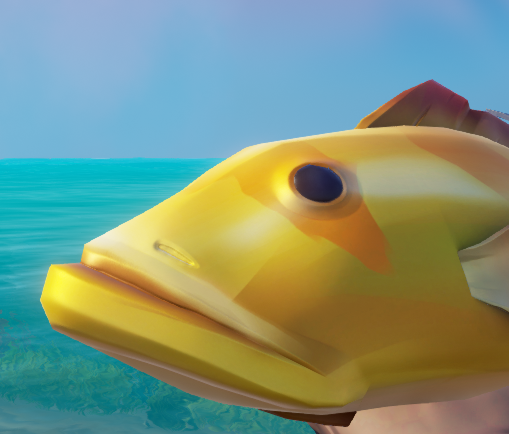

hello world!

This is my Website!
Martin Wise is currently a third year at Cal Poly San Luis Obispo studying for a degree in Computer Science.
He transfered into Cal Poly from the College of the Canyons located in Santa Clarita California after reciveing an Associate in Science in Computer Science for Transfer degree in 2023